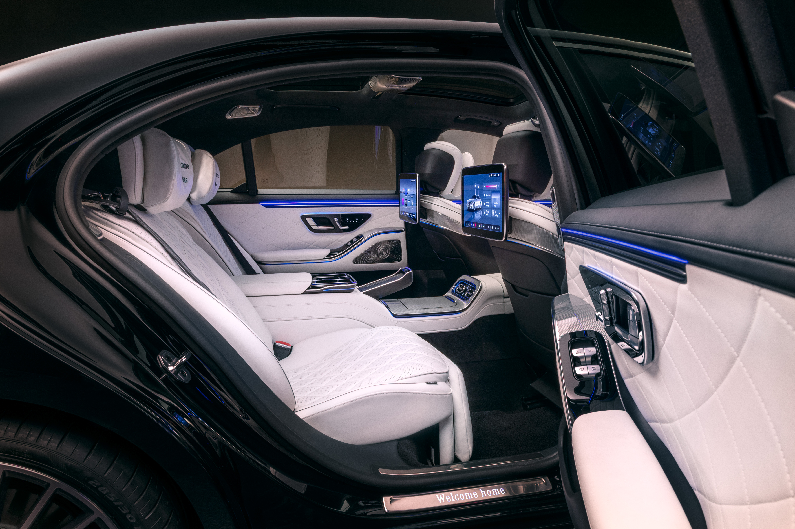
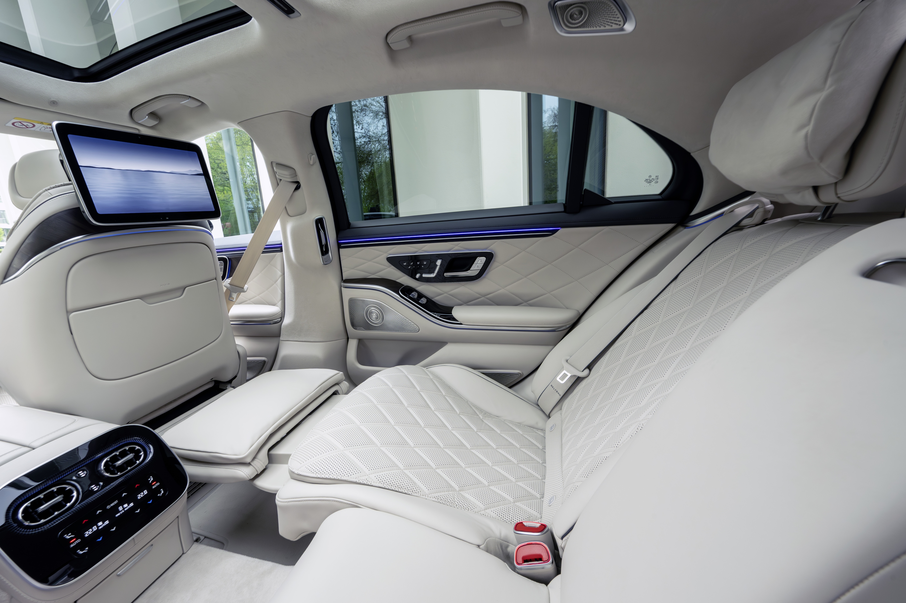
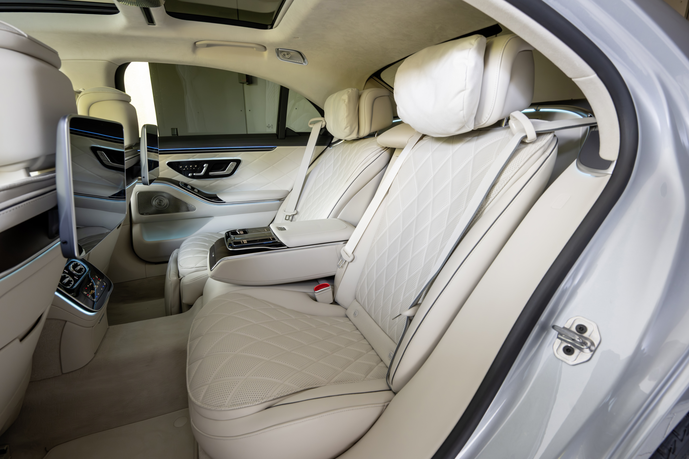

后排的一个遥控器，能简单到取代触屏吗？
S 级的后排乘客以行政和商务用户为主，乘坐时间长，对私密性和专属感的要求极高。不同于 MPV 强调共享的后排场景，S 级的后排是"每位乘客独享一个完整的私人空间"。因此后排配备了两块独立的显示屏，左右乘客各自拥有专属的娱乐和舒适性控制终端，互不干扰。配合遥控器（RC），让每位后排用户在最放松的姿态下掌控属于自己的一切。
一人一屏的专属体验
两块独立屏幕是产品定义的核心出发点。左右后排乘客各自拥有独立的 RSE 屏幕，可以各自观看不同内容、调节各自座椅的舒适性，彼此完全不影响。这种"一人一屏"的配置直接反映了 S 级客群对专属感的期待，这不是一块需要协商使用权的共享屏幕，而是每位 VIP 的私人终端。
舒适性功能覆盖后排乘客最核心的需求：座椅（加热平衡、按摩模式与强度、腰托、侧垫）、空调（温度/风量）、氛围灯（单色/多色切换、分区亮度、阅读灯）。交互逻辑和前排保持一致，降低学习成本。在此基础上增加后排专属能力，Adaptive Fond Light 根据场景（阅读/休息/交谈）自动调节后排内饰灯，不需要手动设置。
RC 的定位是"数字电视遥控器"：拿起来就知道怎么用。支持手持操控自己的屏幕和放在底座上触控两种模式。每位乘客的 RC 只控制自己这一侧的屏幕和座椅，进一步强化私属边界。

玻璃座椅渲染与精简层级
交互层面，双屏独立架构意味着每块屏幕都是一个完整的系统，各自有独立的首页、独立的功能入口、独立的状态管理。座椅功能页面做了精简层级：首页是功能卡片总览（HomeScreen variant），进入后是调节详情。按摩页面一键开关、选择强度、切换七种模式（Classic/Wave/Calves/Activating/Relaxing/Deep Wave/Hot Stone），不需要层层深入。用户点击座椅可视化图即可直接启停按摩。
视觉上的核心亮点是玻璃质感的座椅可视化渲染（Seat Visualization）。座椅以半透明的玻璃材质呈现在界面中，加热状态时红色叠层根据加热等级分阶渐变显示，通风状态时蓝色叠层对应呈现，温度状态一目了然。这套可视化同时承载交互功能，直接点击座椅图形启停按摩、切换左右座椅视图。氛围灯滑块的颜色随亮度变化同步调整饱和度和明度，滑块本身就是实时颜色预览。多色模式下每个主题以色彩条纹缩略图呈现，横向滑动浏览即选即用。


整体视觉氛围强调私属的安静感，深色界面、克制的信息密度、大留白，让每块屏幕都像是这位乘客的私人管家界面，而非一个公共信息面板。